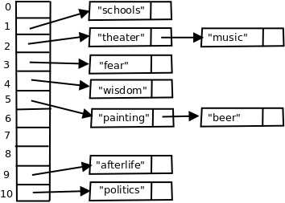
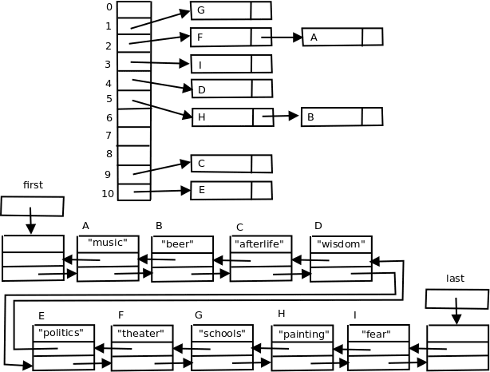
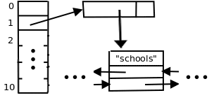

Hashing concepts
The naïve idea of hashing is to store an element into an array at a position index computed as follows:- obtain element_hash_code of the element by processing the element's data and generating an integer value (the idea of "hashing" the element roughly means "grinding it up")
- use a simple mod operation to map into the array's range:
index = hash(element) = abs(element_hash_code % array_capacity)
The element_hash_code can be negative, and so the absolute value is needed to ensure that we obtain a non-negative value.
|
Imagine the following set of strings and their computed hash values: element hash(element) ------- ------------- "beer" 5 "afterlife" 9 "wisdom" 4 "politics" 10 "schools" 1 "fear" 3The hash table would look like what you see here ⇒ |
|
element hash(element) ------- ------------- "painting" 5
Java's hashCode function
In order to do hashing, we must have access to, or be able to create a suitable hash code for any element. In a generic situation, this means that the element type must be "hashable". Fortunately, Java has a built-in, Object-level member function called hashCode which generates such a hash code for any element. You can try this simple example to view the hashCode values of various element:for ( Object obj : new Object[] { "a", "A", new Integer(10), "a0", "a1", new Float(10.0) } ) { System.out.println(obj.hashCode()); }
97 65 10 3055 3056 1092616192For a single character, the hashCode is the ASCII value, for the Integer, the value itself, otherwise some function combines the object's data bits to create the hashCode. An important notion of hashing is that it is replicable, i.e., the same element will generate the same hash code every time the program is executed on any kind of system running Java, for now and forever in the future. Amen!
Hashing is really not constant time, but we say it is
If we have no collisions, the search for a given string, would simply involve computing the hash index and look in table at that index position. Based on this idea, it is usually stated that the cost of a perfect hash-based search is constant time, O(1), or constant time, regardless of the number of elements. The constant time claim is not technically correct. The reason is that in order to have the ability to create N distinct elements, each element must be constructed from a finite set of symbols using a sequence of length Ω(log(N)). The hash function would have to process the entire symbol sequence in order to avoid duplicating hash codes, thus forcing an Ω(log(N)) lower bound to compute the hash code. Despite this technicality, hash search time (at least for perfect hashing) is said to be O(1), or constant time.Open hashing, chaining
The key issue in hashing is dealing with, or resolving, collisions. The simplest idea of resolving collisions is to group them together as a set of colliding elements accessed through the array at the hash index. The technique called open hashing (as opposed to closed) maintains the set of colliding elements in a separate data structure called a bucket accessed through the array index. A hash search procedure becomes this operation:- compute the hash index: index = abs(element.hashCode() % array_size)
- search the set bucket[index] for an occurrence of the element
int capacity = 11; String[] strings = {"music", "beer", "afterlife", "wisdom", "politics", "theater", "schools", "painting", "fear"}; for (String s : strings) { System.out.println( '"' + s + '"' + "\n\thash code: " + s.hashCode() + "\n\tarray index: " + Math.abs(s.hashCode() % capacity) ); }
"music"
hash code: 104263205
array index: 2
"beer"
hash code: 3019824
array index: 5
"afterlife"
hash code: 1019963096
array index: 9
"wisdom"
hash code: -787603007
array index: 4
"politics"
hash code: 547400545
array index: 10
"theater"
hash code: -1350043631
array index: 2
"schools"
hash code: 1917457279
array index: 1
"painting"
hash code: 925981380
array index: 5
"fear"
hash code: 3138864
array index: 3
|
 |
Array capacity
Our example uses an array of capacity 11. The textbook chooses a default capacity of 101. Why 11 and 101 and not 10 and 100? The reason is that we want the capacity to be a prime number. What is important about being a prime? The reason is that it makes the mod operation less "predictable". For example, suppose we had a table whose capacity was even and we want to put these Integer keys (whose .hashCode is the value) into the table:key = 39934, 9656, 73232, 8856, 2342342, 3003338The target index in each case would be:
index = key % capacityWhat can we say about index? It is even. Thus the even capacity makes the resultant indices "predictable". So we should not allow an even capacity. The same can be said for a capacity value which is the multiple of some other small value. The rule of thumb is that the capacity should be either a prime or else the product of "large" primes.
Demo Project
Create a NetBeans project HashDemo. Assuming you use the default setup of NetBeans, the main class will be named HashDemo. Change the content to the following:- mainShowHashValues: shows the hash codes and index values for various elements
- mainShowSets: Compare TreeSet, HashSet, and LinkedHashSet in terms of retrieval of stored elements.
- mainCompareTreeHashSets:
Create a sorted list of unique random integers from a list possibly
containing duplicates.
This program makes the timing comparison between:
- Entering numbers into a HashSet, transferring the set to a list, and sorting the list.
- Entering numbers into a TreeSet, transferring to a list (since it's already sorted).
Load and Rehashing
Assuming that the hash code computation is constant time, the lookup time now involves comparisons against elements in the collision chain and so it is critical importance to somehow ensure that the buckets remain of a small size. The crucial measure of performance of a hash table is the load, which is simply:
load = (# elements in the hash table) / capacity
If the load becomes too large, the buckets, obviously, can
become too large and cause degradation of the search time.
For example, this hash table in the above example has a load of
9/11 = .82The hash table implementation must establish a maximum allowable load value which Java refers to as the load factor. According to Java documentation, a load factor of .75 is recommended. For example, the table in our previous example has a load (.82) greater than the acceptable value.
Rehash
When the load becomes greater than the allowable load factor, a rehash operation is required. The operation is similar to what is done with the ArrayList class in that we put the same content into a larger array. It goes like this:- Find a suitable larger capacity ≥ twice the previous capacity. We will assume capacity is always a prime numbers, meaning we have to find a prime number bigger than the current value of 2 * capacity.
- Allocate a new array using the increased capacity value.
- Traverse the old hash table. For each data element, compute a new index value (the hash code is the same, but the target index, subject to mod by a new capacity value, will most likely have changed), then reinsert the element into the new table.
Finding the next prime
The Java function used by our implementation to calculate the next larger prime is the function primeUp(n). The idea is to use a nested loop where the outer loop examines all odd numbers ≥ n and the inner loop sees if we can find reject it by finding an odd divisor between 3 and its square root; the first number which cannot be rejected is the prime we want. Here is the definition of the primeUp function:private int primeUp(int n) { int prime = n; if (prime % 2 == 0) { prime += 1; } // start the test loop with prime = first odd number up from n boolean found_prime; do { // outer loop, testing odd numbers ≥ n found_prime = true; // check for divisibility for all odd numbers between 3 and sqrt(prime) for (int i = 3; i <= Math.sqrt(prime); i += 2) { if (prime % i == 0) { found_prime = false; prime += 2; // divisor found, reject this one and break; // try the next odd number up } } } while (!found_prime); return prime; }
new_capacity = primeUp( 2 * capacity + 1 );i.e., the call to primeUp uses the value
n = 2 * capacity + 1as the starting point in searching for the next prime. The question is how many outer loops will execute, i.e., how far from n must we go to find the next prime? We can use the result from the famous Prime Number Theorem which states
the number of primes ≤ n is approximately ln(n)/n (using the natural logarithm).We can infer that, on the average, the next prime will be found after ln(n) outer loops. The inner loop executes at most sqrt(n)/2 times (the number of odd divisors which are tested). Assume that the rehash is called when the number of elements, N ≥ .75 * capacity. We can then compute the average time (counting integer divisions) to find a the next prime in terms of the number, N, of elements to be:
≤ ln( 2*capacity + 1 ) * sqrt( 2*capacity + 1 ) / 2
≤ ln(2*N/.75 + 1) * sqrt(2*N/.75 + 1) / 2
= O( log(N) * sqrt(N) )
= o( sqrt(N) * sqrt(N) ) since log(N) = o(sqrt(N))
= o(N)
Since a rehash costs O(N)
just to move the N elements
into the new hash table, we conclude that the primeUp function
adds no significant extra cost.
HashSet Implementation
Our user-defined OpenHashSet class extends the SetAdapter class which was used as the basis of the SearchTree class in the TreeSets document. Either copy from the TreeDemo project, or create the Java Class fresh:Class Name: SetAdapter package: setThen insert the following content
Class Name: OpenHashSet package: hashwith the following content:
Demo function
Use the HashDemo main class. Add (uncomment) the import statement:import hash.*;
public static void main(String[] args) { mainTestOpenHashSet(args); }
Basis
At the basis of the OpenHashSet are the Node class and data elements:private class Node<E> { E data; Node next; Node(E data, Node next) { this.data = data; this.next = next; } } private Node[] bucket; private int capacity; // default value 101 private float loadFactor; // default value .75 private int size = 0;
public OpenHashSet(int capacity, float loadFactor) { capacity = primeUp(capacity); // we need a prime this.capacity = capacity; bucket = new Node[capacity]; this.loadFactor = loadFactor; }
Dealing with null
Unlike TreeSets, Java HashSets and LinkedHashSets permit null to be in the set. The problem is that null must to be treated as an exceptional case, because hash(null) cannot be computed and the equality tests will fail as written. For simplicity, our implementation will disallow the null value by initially testing each operation with something like this:if (obj == null) { throw new java.lang.IllegalArgumentException("null not allowed"); }
Contains, add and remove
The key idea in hashing-based operations is that every operation begins, either explicitly or implicitly, with code like this:int index = hash(obj); // find the hash index of the element Node n = bucket[index]; // access the Node chain for that index
public boolean contains(Object obj) { int index = hash(obj); Node n = bucket[index]; while (n != null) { if (n.data.equals(obj)) { return true; } n = n.next; } return false; }
public boolean add(E elt) { if (contains(elt)) { return false; } ++size; if ( (float)size/capacity > loadFactor ) { rehash(); } int index = hash(elt); bucket[index] = new Node(elt, bucket[index]); return true; }
public boolean remove(Object obj) { if (!contains(obj)) { return false; } --size; int num = hash(obj); bucket[num] = remove(bucket[num], obj); return true; } private Node remove(Node n, Object obj) { if (n.data.equals(obj)) { return n.next; } else { n.next = remove(n.next,obj); return n; } }
public boolean remove(Object obj) { if (!contains(obj)) { return false; } --size; int num = hash(obj); if (bucket[num].next == null) { // one node only which must contain obj bucket[num].next = null; // clear the singleton chain } else { Node n = bucket[num]; while (!n.next.data.equals(obj)) { n = n.next; } // n.next hold obj n.next = n.next.next; // reroute around n.next which contains obj } return true; }
Timing
The contains, add, and remove operations are all considered to be constant time, or O(1) operations.LinkedHashSets
The Java LinkedHashSet object, as we have seen in the demo program, keeps track of the entry order of elements yet retains its contant time speed for the lookup-based operations. The way to achieve this effect is to maintain, in addition to the hash table, a linked list which holds the elements. The linked list is used exclusively for iteration through the elements. As an example, we'll revisit the hash entries into a table of capacity 11:element index ------- ----- "music" 2 "beer" 5 "afterlife" 9 "wisdom" 4 "politics" 10 "theater" 2 "schools" 1 "painting" 5 "fear" 3Here is a depiction of the underlying structure:

What is being suggested is the following additions/modifications to the node structure:
private class Node { ListNode ptr; Node next; Node(ListNode ptr, Node next) { this.ptr = ptr; this.next = next; } } private class ListNode { E data; ListNode next; ListNode prev; ListNode(E data, ListNode next, ListNode prev) { this.data = data; this.next = next; this.prev = prev; } } private ListNode first, last;

Without going into details, here is an outline of the operations:
- contains(obj): while moving through the pointer chain in the hash table,
the test for equality now becomes this:
if (n.ptr.data.equals(obj))
- rehash: simply traverse the linked list, adding each node p into the newly created hash table according the index hash(p.data).
- add(elt): after testing contains,
do an addLast(elt) on the linked list, retrieving a pointer, p to
the added ListNode node, then:
bucket[index] = new Node(p, bucket[index]);
- remove(obj): after testing contains, obtain the ListNode
pointer p for the obj in the linked list. Using p.next and
p.prev we can reroute the linked list around p, thereby removing it.
A useful helper function is this modification of contains:
Invoking Node n = search(obj) indicates whether contains should be true or not by testing n != null; furthermore ListNode p = n.ptr becomes the ListNode we want to remove from the linked list.
private Node search(Object obj) { int index = hash(obj); Node n = bucket[index]; while (n != null) { if ( n.ptr.data.equals(obj) ) { break; } else { n = n.next; } } return n; }